Spectre basics guide
Thomas Ashhurst, Givanna Putri
2025-09-18
Source:vignettes/basics_guide.Rmd
basics_guide.RmdSpectre basics guide
Here provide a brief and high-level introduction to using R, RStudio, and Spectre. Additional educational material on using R and R Studio are available on many sites, including the RStudio education site or this R Spatial page.
R basics
To interact with the R programming language, we recommend using RStudio.
Open RStudio
Open RStudio, and you should see something similar to the following:
- Top left = R script. This is a text editor where lines or segments of code can be ‘run’, which will send commands to R.
- Bottom left = console. When commands are sent to R, the console will show the progress/output/result. Code can also be entered and run directly in the console.
- Top right = workspace. Whenever you create an object in R (such as saving a set of data) it will show up here.
- Bottom right = various. This is mainly used for displaying plots (under ‘Plots’), investigating the packages (‘Packages’), or using the help section (‘Help’).
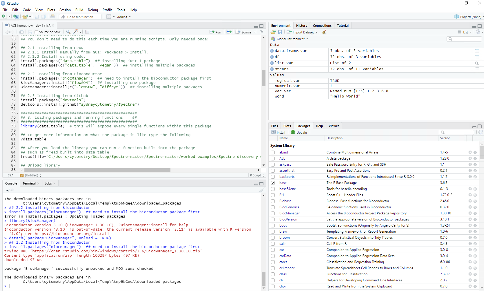
R code basics
There are two important types of text commonly found in R scripts:
Comments Any line in R code that starts with a
# is considered a comment. These are not executed by
RStudio as R code, but rather are used as notes to the user.
This is a comment:
## Run the following line to find your current working directoryExecutable code A line or segment of code can be run
and will return some form of result. In the example below, the
getwd() function will return the location of the current
working directory.
This is the code:
getwd()When the code is run, the output may look something like this:
[1] "/Users/Tom/Desktop"Create and save and R script
To get started, create a new .R file and save it
- Make a folder on your desktop called “Spectre demo”
- In RStudio, create a new R Script file (.R) called “MyScript” and save it in the folder you just created (Spectre demo).
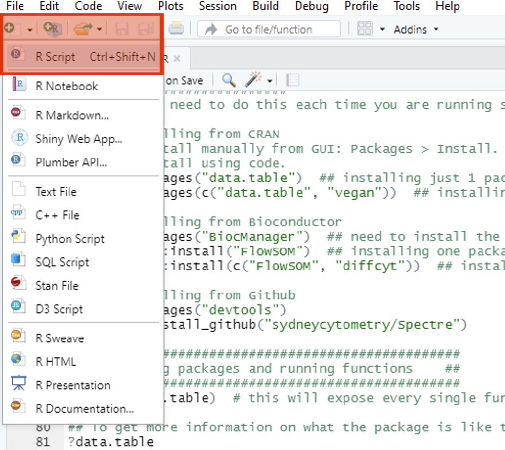
Practice running code
For this demo we will use the ‘iris’ dataset, which consists of measurements of 150 flowers. Each row represents one flower, and each column represents a different measurement of that flower.
To run code in RStudio, we can either enter code into the script and selectively run elements of the code (preferred), or we can enter it directly into the console and run the code. For each of the code-blocks below, copy the code into your new script, press save, and then highlight and press CMD/CTRL return to execute the code
Read the dataset
Copy the following into your script, save, then highlight the code and press CMD/CTRL return. The first command we will run is to load the ‘iris’ dataset and save it as the object ‘dat’. The lines starting with ‘#’ are only comments, and will not excute as commands (even if you select them and press CMD + return).
## Part 1: read the dataset
# Use the 'iris' dataset (150 flowers one per row) with various measurement (each column is a different measurement)
dat <- irisAfter executing, you should should see a new object in the workspace (top right). This will be called ‘dat’, containing 150 observations, and 5 variables.
dat## Sepal.Length Sepal.Width Petal.Length Petal.Width Species
## 1 5.1 3.5 1.4 0.2 setosa
## 2 4.9 3.0 1.4 0.2 setosa
## 3 4.7 3.2 1.3 0.2 setosa
## 4 4.6 3.1 1.5 0.2 setosa
## 5 5.0 3.6 1.4 0.2 setosa
## 6 5.4 3.9 1.7 0.4 setosa
## 7 4.6 3.4 1.4 0.3 setosa
## 8 5.0 3.4 1.5 0.2 setosa
## 9 4.4 2.9 1.4 0.2 setosa
## 10 4.9 3.1 1.5 0.1 setosa
## 11 5.4 3.7 1.5 0.2 setosa
## 12 4.8 3.4 1.6 0.2 setosa
## 13 4.8 3.0 1.4 0.1 setosa
## 14 4.3 3.0 1.1 0.1 setosa
## 15 5.8 4.0 1.2 0.2 setosa
## 16 5.7 4.4 1.5 0.4 setosa
## 17 5.4 3.9 1.3 0.4 setosa
## 18 5.1 3.5 1.4 0.3 setosa
## 19 5.7 3.8 1.7 0.3 setosa
## 20 5.1 3.8 1.5 0.3 setosa
## 21 5.4 3.4 1.7 0.2 setosa
## 22 5.1 3.7 1.5 0.4 setosa
## 23 4.6 3.6 1.0 0.2 setosa
## 24 5.1 3.3 1.7 0.5 setosa
## 25 4.8 3.4 1.9 0.2 setosa
## 26 5.0 3.0 1.6 0.2 setosa
## 27 5.0 3.4 1.6 0.4 setosa
## 28 5.2 3.5 1.5 0.2 setosa
## 29 5.2 3.4 1.4 0.2 setosa
## 30 4.7 3.2 1.6 0.2 setosa
## 31 4.8 3.1 1.6 0.2 setosa
## 32 5.4 3.4 1.5 0.4 setosa
## 33 5.2 4.1 1.5 0.1 setosa
## 34 5.5 4.2 1.4 0.2 setosa
## 35 4.9 3.1 1.5 0.2 setosa
## 36 5.0 3.2 1.2 0.2 setosa
## 37 5.5 3.5 1.3 0.2 setosa
## 38 4.9 3.6 1.4 0.1 setosa
## 39 4.4 3.0 1.3 0.2 setosa
## 40 5.1 3.4 1.5 0.2 setosa
## 41 5.0 3.5 1.3 0.3 setosa
## 42 4.5 2.3 1.3 0.3 setosa
## 43 4.4 3.2 1.3 0.2 setosa
## 44 5.0 3.5 1.6 0.6 setosa
## 45 5.1 3.8 1.9 0.4 setosa
## 46 4.8 3.0 1.4 0.3 setosa
## 47 5.1 3.8 1.6 0.2 setosa
## 48 4.6 3.2 1.4 0.2 setosa
## 49 5.3 3.7 1.5 0.2 setosa
## 50 5.0 3.3 1.4 0.2 setosa
## 51 7.0 3.2 4.7 1.4 versicolor
## 52 6.4 3.2 4.5 1.5 versicolor
## 53 6.9 3.1 4.9 1.5 versicolor
## 54 5.5 2.3 4.0 1.3 versicolor
## 55 6.5 2.8 4.6 1.5 versicolor
## 56 5.7 2.8 4.5 1.3 versicolor
## 57 6.3 3.3 4.7 1.6 versicolor
## 58 4.9 2.4 3.3 1.0 versicolor
## 59 6.6 2.9 4.6 1.3 versicolor
## 60 5.2 2.7 3.9 1.4 versicolor
## 61 5.0 2.0 3.5 1.0 versicolor
## 62 5.9 3.0 4.2 1.5 versicolor
## 63 6.0 2.2 4.0 1.0 versicolor
## 64 6.1 2.9 4.7 1.4 versicolor
## 65 5.6 2.9 3.6 1.3 versicolor
## 66 6.7 3.1 4.4 1.4 versicolor
## 67 5.6 3.0 4.5 1.5 versicolor
## 68 5.8 2.7 4.1 1.0 versicolor
## 69 6.2 2.2 4.5 1.5 versicolor
## 70 5.6 2.5 3.9 1.1 versicolor
## 71 5.9 3.2 4.8 1.8 versicolor
## 72 6.1 2.8 4.0 1.3 versicolor
## 73 6.3 2.5 4.9 1.5 versicolor
## 74 6.1 2.8 4.7 1.2 versicolor
## 75 6.4 2.9 4.3 1.3 versicolor
## 76 6.6 3.0 4.4 1.4 versicolor
## 77 6.8 2.8 4.8 1.4 versicolor
## 78 6.7 3.0 5.0 1.7 versicolor
## 79 6.0 2.9 4.5 1.5 versicolor
## 80 5.7 2.6 3.5 1.0 versicolor
## 81 5.5 2.4 3.8 1.1 versicolor
## 82 5.5 2.4 3.7 1.0 versicolor
## 83 5.8 2.7 3.9 1.2 versicolor
## 84 6.0 2.7 5.1 1.6 versicolor
## 85 5.4 3.0 4.5 1.5 versicolor
## 86 6.0 3.4 4.5 1.6 versicolor
## 87 6.7 3.1 4.7 1.5 versicolor
## 88 6.3 2.3 4.4 1.3 versicolor
## 89 5.6 3.0 4.1 1.3 versicolor
## 90 5.5 2.5 4.0 1.3 versicolor
## 91 5.5 2.6 4.4 1.2 versicolor
## 92 6.1 3.0 4.6 1.4 versicolor
## 93 5.8 2.6 4.0 1.2 versicolor
## 94 5.0 2.3 3.3 1.0 versicolor
## 95 5.6 2.7 4.2 1.3 versicolor
## 96 5.7 3.0 4.2 1.2 versicolor
## 97 5.7 2.9 4.2 1.3 versicolor
## 98 6.2 2.9 4.3 1.3 versicolor
## 99 5.1 2.5 3.0 1.1 versicolor
## 100 5.7 2.8 4.1 1.3 versicolor
## 101 6.3 3.3 6.0 2.5 virginica
## 102 5.8 2.7 5.1 1.9 virginica
## 103 7.1 3.0 5.9 2.1 virginica
## 104 6.3 2.9 5.6 1.8 virginica
## 105 6.5 3.0 5.8 2.2 virginica
## 106 7.6 3.0 6.6 2.1 virginica
## 107 4.9 2.5 4.5 1.7 virginica
## 108 7.3 2.9 6.3 1.8 virginica
## 109 6.7 2.5 5.8 1.8 virginica
## 110 7.2 3.6 6.1 2.5 virginica
## 111 6.5 3.2 5.1 2.0 virginica
## 112 6.4 2.7 5.3 1.9 virginica
## 113 6.8 3.0 5.5 2.1 virginica
## 114 5.7 2.5 5.0 2.0 virginica
## 115 5.8 2.8 5.1 2.4 virginica
## 116 6.4 3.2 5.3 2.3 virginica
## 117 6.5 3.0 5.5 1.8 virginica
## 118 7.7 3.8 6.7 2.2 virginica
## 119 7.7 2.6 6.9 2.3 virginica
## 120 6.0 2.2 5.0 1.5 virginica
## 121 6.9 3.2 5.7 2.3 virginica
## 122 5.6 2.8 4.9 2.0 virginica
## 123 7.7 2.8 6.7 2.0 virginica
## 124 6.3 2.7 4.9 1.8 virginica
## 125 6.7 3.3 5.7 2.1 virginica
## 126 7.2 3.2 6.0 1.8 virginica
## 127 6.2 2.8 4.8 1.8 virginica
## 128 6.1 3.0 4.9 1.8 virginica
## 129 6.4 2.8 5.6 2.1 virginica
## 130 7.2 3.0 5.8 1.6 virginica
## 131 7.4 2.8 6.1 1.9 virginica
## 132 7.9 3.8 6.4 2.0 virginica
## 133 6.4 2.8 5.6 2.2 virginica
## 134 6.3 2.8 5.1 1.5 virginica
## 135 6.1 2.6 5.6 1.4 virginica
## 136 7.7 3.0 6.1 2.3 virginica
## 137 6.3 3.4 5.6 2.4 virginica
## 138 6.4 3.1 5.5 1.8 virginica
## 139 6.0 3.0 4.8 1.8 virginica
## 140 6.9 3.1 5.4 2.1 virginica
## 141 6.7 3.1 5.6 2.4 virginica
## 142 6.9 3.1 5.1 2.3 virginica
## 143 5.8 2.7 5.1 1.9 virginica
## 144 6.8 3.2 5.9 2.3 virginica
## 145 6.7 3.3 5.7 2.5 virginica
## 146 6.7 3.0 5.2 2.3 virginica
## 147 6.3 2.5 5.0 1.9 virginica
## 148 6.5 3.0 5.2 2.0 virginica
## 149 6.2 3.4 5.4 2.3 virginica
## 150 5.9 3.0 5.1 1.8 virginicaNext we will review the dimensions of ‘dat’ (how many rows and columns) and preview data from the first 6 rows of dat.
Copy the following into your script, save, then highlight the code and press CMD/CTRL return. You should now see the following in the console. Lines starting with ‘>’ denote the commands that were executed. Lines without ‘>’ are the output. As you can see below the request to show the dimensions of our dataset using dim(dat) has given us 150 rows and 5 columns.
# Determine the number of rows and columns in the dataset
dim(dat)## [1] 150 5Copy the following into your script, save, then highlight the code and press CMD/CTRL return. You should now see the following in the console. Lines starting with ‘>’ denote the commands that were executed. Lines without ‘>’ are the output. The request to preview the first 6 rows of our data using head(dat) has shown us the contents of the first 6 rows.
# Examine the first few lines of dataset
head(dat)## Sepal.Length Sepal.Width Petal.Length Petal.Width Species
## 1 5.1 3.5 1.4 0.2 setosa
## 2 4.9 3.0 1.4 0.2 setosa
## 3 4.7 3.2 1.3 0.2 setosa
## 4 4.6 3.1 1.5 0.2 setosa
## 5 5.0 3.6 1.4 0.2 setosa
## 6 5.4 3.9 1.7 0.4 setosaPlot the dataset
Next, we will plot some of the dataset. Copy the following into your script, save, then highlight the code and press CMD/CTRL return. After executing, your should see the following under ‘Plots’.
## Part 2: plot the dataset
# Plot iris dataset (all plots)
plot(dat)To be a little more specific, let’s try plotting one column of the dataset against another. Copy the following into your script, save, then highlight the code and press CMD/CTRL return. Now we should see a plot of the sepal width vs length.
# Plot iris dataset (chosen X and Y parameters)
plot(x = dat$Sepal.Length, y = dat$Sepal.Width)Save the dataset
Now, let’s save the dataset as a .csv file. A .csv file is kind of like an .xlsx file, without the bells and whistles. Data in a table format is saved, using commas to indicate the separation of new columns. When this is read by excel or RStudio, it displays a table. Run the following lines to determine the current working directory (where you will read files from and write files to).
Copy the following into your script, save, then highlight the code and press CMD/CTRL return.
## Part 3: save the dataset
# Determine the current working directory
getwd() This will return the location of your current working directory. In my case:
[1] "/Users/thomasa"Let’s aim to save the CSV to our desktop. To do this we would have to a) change the ‘working directory’ to the desktop (on a mac, it would look something like “/Users/Tom/Desktop”). When we set a working directory, we are telling R a) where to look for files when we ask it to, and b) where to create files when we ask it to.
To set the working directory, type setwd() into the script but don’t run it yet.
setwd()Finding a specific directory (absolute path)
- On a mac, start by entering “/” between the (): setwd(“/”)
- Click after the / and press TAB
- You should see a list of options from your root directory. You can press the UP or DOWN arrows, or use the mouse cursor, to select on of the options, and press ENTER to select in.
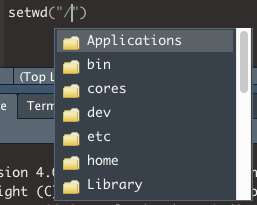
- If you start typing the name of a directory, the list of options will be filtered to options that match what you are typing.
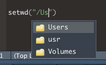
- In this case, I will select ‘Users’ and press ENTER. I can then repeat the process to navigate down my folders
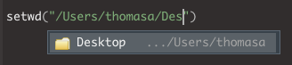
- You can repeat this process to find your working directory until you reach your desired location.
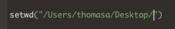
If I now select this line, or highlight the code and press ENTER, R will set the working directory:
setwd("/Users/thomasa/Desktop/")The following should be returned
> setwd("/Users/thomasa/Desktop/")Now I can check the working directory has been set correctly by running the following:
getwd()If everything has gone correctly, the following (or equivalent) should be returned:
[1] "/Users/thomasa/Desktop/"Now we will write the dataset to a .csv file (which will be saved in the working directory). We will use the function ‘write.csv’. The input variables here are what dataset we want to write (x = dat) and what we want to call the file (file = “iris_dataset.csv”).
Execute the following, and check the folder (set as your working directory) to see that the new file has been created.
# Write a .csv file of the dataset
write.csv(x = dat, file = "iris_dataset.csv")Spectre basics
Setup tutorial script and dataset
To interact with the Spectre package in R, we will use RStudio.
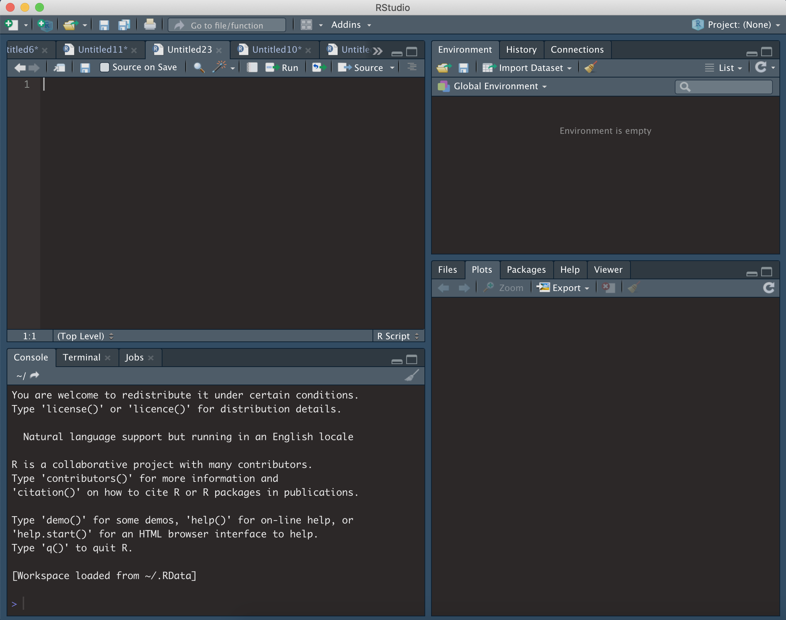
Load Spectre package
To use Spectre, we first need to load the ‘Spectre’ package, as well as other relevant packages. To do this, follow the instructions below.
- Copy the code on the right into your R script (MyScript.R). Make sure to SAVE.
- Run each line (one by one) by clicking on the line or highlighting the text, and press CMD + return (Mac) or CTRL + Enter (Windows).
- As above, nothing is returned if they are loaded successfully, or an error message is returned if they are not.
- If you have installed Spectre, but the package won’t load, then you can visit our installation troubleshooting page.
If successful:
>if unsuccessful:
> Error in library("Spectre") : there is no package called ‘Spectre’Load other packages
Rather than having to load each individual package required one-by-one (library(‘plyr’), library(‘data.table’) etc), we have created two functions to simplify this process:
-
packages.check()will check if all the required packages are installed -
package.load()will load all the required packages
## Check if the other required packages are installed
Spectre::package.check()
## Load the required packages
Spectre::package.load()As each package is loaded, you will see the following:
> Loading required package: PACKAGENAMESo far you should have the following code in your script:
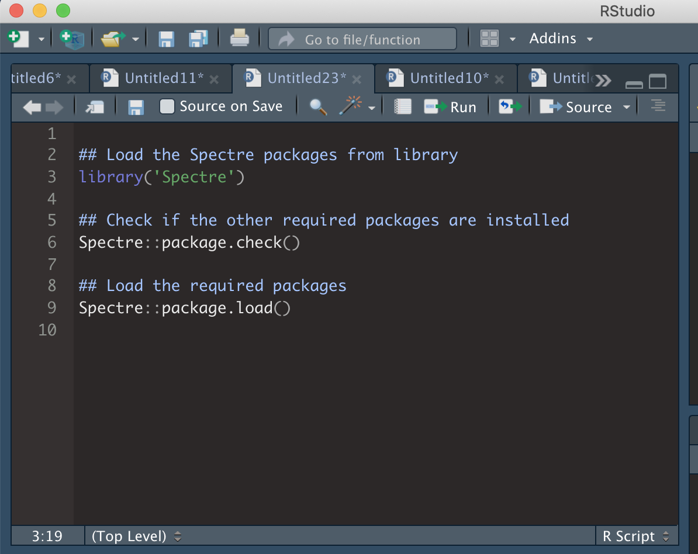
Set a working directory
Normally this would be the location of the files you would like to analyse. For now, you can just this as your desktop or similar. If you aren’t sure how to search for directories, please have a look at our basic R tutorial.
## Set working directory
setwd("/Users/thomasa/Desktop")
## Check that it has been set correctly
getwd()
## Save the working directory as an object called 'Primary Directory'
PrimaryDirectory <- getwd()Create an output directory
Now we will create a directory where we can save the data and plots we will generate shortly.
## Create an output directory
dir.create("Spectre-demo-output")
## Go to that directory and save it as an object called 'Output Directory'
setwd("Spectre-demo-output")
getwd()
OutputDirectory <- getwd()
## Finally, set the current working directory to 'PrimaryDirectory'
setwd(PrimaryDirectory)Load data
Normally, we load some CSV or FCS files from the disk, or a server into R for analysis. In this tutorial, we will skip this step, and use an included demo dataset called ‘demo.start’. This is a dataset of 120,000 cells, from 12 bone marrow samples: 6x from mock-infected mice, and 6x West Nile virus (WNV)-infected mice. This amounts to 10,000 cells per sample. The data set is structured as a large data.frame (a table) where each column is a cellular marker (e.g. FITC-CD4, etc), and each row is a cell.
Assign the included demo.start dataset to a new object we will call cell.dat.
cell.dat <- Spectre::demo.clustered## Warning: replacing previous import 'scales::viridis_pal' by
## 'viridis::viridis_pal' when loading 'Spectre'
cell.dat <- cell.dat[,1:19]
cell.dat <- Spectre::do.subsample(dat = cell.dat, targets = 10000)## Loading required package: data.tableYou can review the structure of cell.dat by using str(). You can see the cell.dat is both a ‘data.table’ and a ‘data.frame’.
str(cell.dat)## Classes 'data.table' and 'data.frame': 10000 obs. of 19 variables:
## $ FileName : chr "CNS_Mock_05.csv" "CNS_Mock_04.csv" "CNS_WNV_D7_02.csv" "CNS_WNV_D7_01.csv" ...
## $ NK11 : num 106 133 -178 889 237 ...
## $ CD3 : num 235.1 16.5 1603.4 441.9 143.3 ...
## $ CD45 : num 13575 9534 131586 99332 7806 ...
## $ Ly6G : num -179 -673 -6522 -3229 -605 ...
## $ CD11b : num 31386 22061 1163 40168 11658 ...
## $ B220 : num -169 185 893 -623 659 ...
## $ CD8a : num -394.7 282.5 -40.3 -764.2 107.7 ...
## $ Ly6C : num 381 608 2727 64542 805 ...
## $ CD4 : num 509.46 1095.47 -5.04 2345.11 1937.42 ...
## $ NK11_asinh : num 0.106 0.132 -0.177 0.8 0.235 ...
## $ CD3_asinh : num 0.233 0.0165 1.2508 0.4287 0.1428 ...
## $ CD45_asinh : num 3.3 2.95 5.57 5.29 2.75 ...
## $ Ly6G_asinh : num -0.178 -0.631 -2.574 -1.888 -0.573 ...
## $ CD11b_asinh: num 4.14 3.787 0.992 4.386 3.151 ...
## $ B220_asinh : num -0.169 0.184 0.804 -0.588 0.619 ...
## $ CD8a_asinh : num -0.3851 0.2789 -0.0403 -0.7044 0.1075 ...
## $ Ly6C_asinh : num 0.372 0.576 1.728 4.861 0.737 ...
## $ CD4_asinh : num 0.48966 0.9473 -0.00504 1.58812 1.41529 ...
## - attr(*, ".internal.selfref")=<externalptr>You can review the dimensionality of cell.dat by using dim(). The first entry returned is the number of rows, and the second is the number of columns.
dim(cell.dat)## [1] 10000 19You can review the first 6 rows (out of the 10,000 rows) of cell.dat by using head(). Each column is a marker or cellular feature, and each row is a cell.
head(cell.dat)Now let’s set some preferences.
## Look at the names of the columns in the dataset, and take note of the number of each column
as.matrix(names(cell.dat))## [,1]
## [1,] "FileName"
## [2,] "NK11"
## [3,] "CD3"
## [4,] "CD45"
## [5,] "Ly6G"
## [6,] "CD11b"
## [7,] "B220"
## [8,] "CD8a"
## [9,] "Ly6C"
## [10,] "CD4"
## [11,] "NK11_asinh"
## [12,] "CD3_asinh"
## [13,] "CD45_asinh"
## [14,] "Ly6G_asinh"
## [15,] "CD11b_asinh"
## [16,] "B220_asinh"
## [17,] "CD8a_asinh"
## [18,] "Ly6C_asinh"
## [19,] "CD4_asinh"Now we can choose the number of each column that we want to use for clustering, rather than having to write out each column name. To do this, we can put the number of the columns in a vector (i.e. c(5,6,8) for columns 5, 6, and 8) within the function below. You can replace these with the column numbers you would prefer to use (if you leave it as c(5,6,8), then the columns used for clustering will be CD117, CD16/32, and CD115.
## Save the column names that you wish to use for clustering as an object called 'cluster.cols'.
cluster.cols <- names(cell.dat)[c(11:19)]We can check to make sure the names have been saved by running ‘cluster.cols’.
as.matrix(cluster.cols)## [,1]
## [1,] "NK11_asinh"
## [2,] "CD3_asinh"
## [3,] "CD45_asinh"
## [4,] "Ly6G_asinh"
## [5,] "CD11b_asinh"
## [6,] "B220_asinh"
## [7,] "CD8a_asinh"
## [8,] "Ly6C_asinh"
## [9,] "CD4_asinh"Clustering
Now we can perform out clustering and dimensionality reduction. First we are going to cluster the data using FlowSOM.
We can use the function ‘run.flowsom’ to run FlowSOM on our ‘cell.dat’ dataset. For more information on performing clustering in Spectre, see this page. There are two key arguments we need to provide to the function. The first is ‘dat’, or the dataset to be used. The second is ‘use.cols’, which is the columns to be used for clustering. In this case, we want to set dat to cell.dat, and use.cols to cluster.cols (which we just created).
## Run FlowSOM
cell.dat <- Spectre::run.flowsom(dat = cell.dat, use.cols = cluster.cols) As the clustering is running, you will see the following red button show up on your RStudio window. That means that RStudio is in the middle of processing something, and it won’t respond to other commands while it is working.
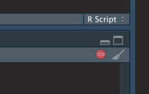
While FlowSOM runs, you will progressively see the three following updates:
Creating SOM
Mapping data to SOM
Creating MSTOnce FlowSOM has finished (and the red button has gone away) you can check the data to ensure the FlowSOM columns have been added correctly. At the end of what’s returned, your should see the FlowSOM metaclusters and clusters added to the dataset
# Check cell.dat to ensure FlowSOM data correctly attached -- by looking at the last two columns
cell.datRun UMAP
Now we can perform dimensionality reduction on our data for visualisation. For this we are going to use UMAP. For more information on dimensionality reduction and cytometry data, please see this page. There are two key arguments we need to provide to the function. The first is ‘dat’, or the dataset to be used. The second is ‘use.cols’, which is the columns to be used for clustering. In this case, we want to set dat to cell.dat, and use.cols to cluster.cols (which we just created). UMAP by default doesn’t provide progress updates. It might take 1-2 minutes for UMAP to finish running.
## Run UMAP
cell.dat <- Spectre::run.umap(dat = cell.dat, use.cols = cluster.cols) ## 06:28:03 UMAP embedding parameters a = 1.577 b = 0.8951## 06:28:03 Converting dataframe to numerical matrix## 06:28:03 Read 10000 rows and found 9 numeric columns## 06:28:03 Using Annoy for neighbor search, n_neighbors = 15## 06:28:04 Building Annoy index with metric = euclidean, n_trees = 50## 0% 10 20 30 40 50 60 70 80 90 100%## [----|----|----|----|----|----|----|----|----|----|## **************************************************|
## 06:28:05 Writing NN index file to temp file /tmp/RtmpGufbqf/file29ca235d1cc2
## 06:28:05 Searching Annoy index using 3 threads, search_k = 1500
## 06:28:06 Annoy recall = 100%
## 06:28:06 Commencing smooth kNN distance calibration using 3 threads with target n_neighbors = 15
## 06:28:07 Initializing from normalized Laplacian + noise (using irlba)
## 06:28:07 Commencing optimization for 200 epochs, with 200182 positive edges using 3 threads
## 06:28:07 Using rng type: pcg
## 06:28:08 Optimization finishedOnce UMAP has finished (and the red button has gone away) you can check the data to ensure the UMAP columns have been added correctly.
## Check cell.dat to ensure the two new UMAP columns have been correctly attached.
cell.datNow that we have run FlowSOM and UMAP, we want to do a quick visual check to make sure everything looks correct. To do this we are going to create a ‘factor’ plot – a dot plot with our two UMAP columns as the X and Y axis, and the FlowSOM_metacluster as the colour. We are going to add the labels of each cluster to the plot, and we will tell the function not to save the image to disk. Running this command should generate a plot in the viewer window in RStudio.
## Make a 'factor' plot
Spectre::make.colour.plot(dat = cell.dat,
x.axis = "UMAP_X",
y.axis = "UMAP_Y",
col.axis = "FlowSOM_metacluster",
col.type = 'factor',
add.label = TRUE,
save.to.disk = FALSE)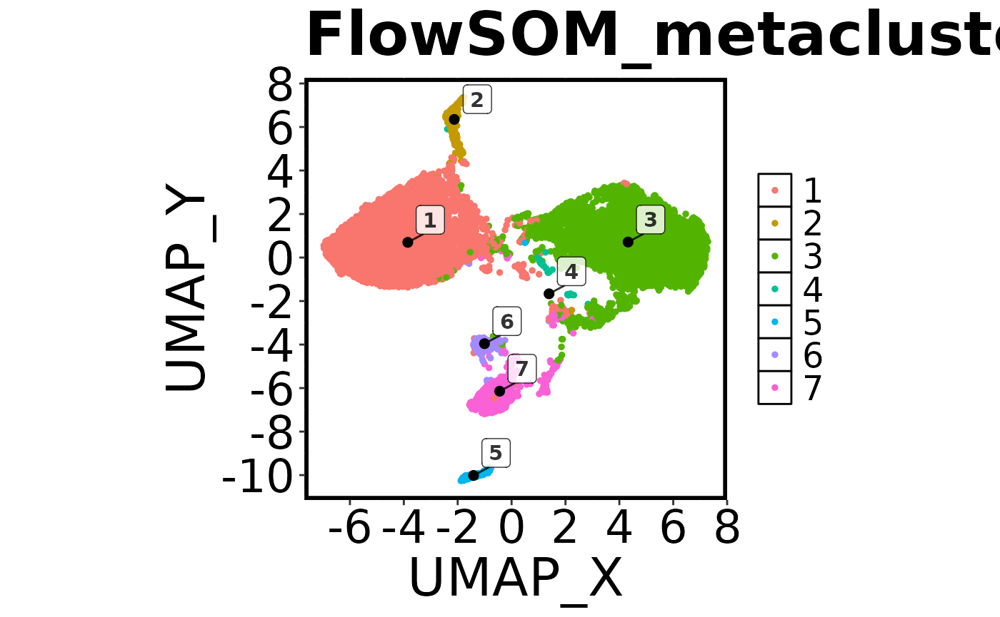
Save data to disk
Now that we have added the cluster and UMAP information to our data, we should save the files and capture our progress.
First, let’s set our working directory to ‘OutputDirectory’, so the data goes to the right place.
## [1] "/home/runner/work/Spectre/Spectre/vignettes"
## Save CSV files
Spectre::write.files(dat = cell.dat,
file.prefix = "Sample_CSV_file",
write.csv = TRUE,
write.fcs = FALSE)To further explore this data in FlowJo, let’s also save some FCS files.
## Save FCS files
Spectre::write.files(dat = cell.dat,
file.prefix = "Sample_FCS_file",
write.csv = FALSE,
write.fcs = TRUE)Make some plots
Now we should create some informative plots.
First we will make another factor plot of the FlowSOM metaclusters, but this time we will set ‘save.to.disk’ to TRUE. Once this has been run, check your working directory for the image.
## Make a 'factor' plot coloured by cluster
Spectre::make.colour.plot(dat = cell.dat,
x.axis = "UMAP_X",
y.axis = "UMAP_Y",
col.axis = "FlowSOM_metacluster",
col.type = 'factor',
add.label = TRUE)Next we’ll make a colour plot showing the expression of a specific marker
 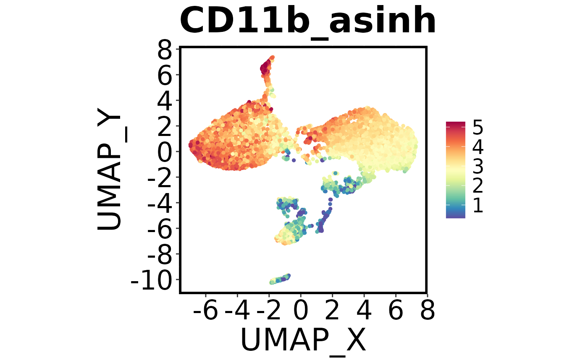
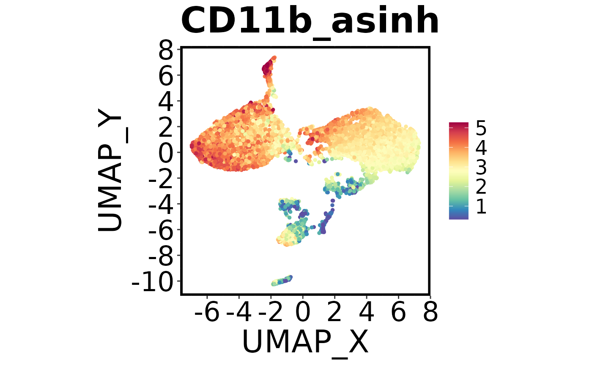
Using Spectre
When you are ready to start analysis, check out our structured workflows and tutorials on the following pages:
- Analysis of high-dimensional cytometry data
- Analysis of high-dimensional imaging/spatial data
- Analysis of single-cell genomics data